คู่มือใช้งานเครื่องมือ · ระดับ Free
ตรวจระบบปรับอากาศ
Air Conditioning Audit Tool
FREE
สำหรับช่างเทคนิคที่เพิ่งเริ่มงาน — อ่านแล้วทำตามได้เอง
ใช้เวลาฝึกประมาณ 60 นาที
เคสตัวอย่าง: อาคาร A เครื่องทำน้ำเย็น 2 ชุด ชุดละ 350 kW (99.5 ตันความเย็น)
อ.หนึ่ง กลับทวี / Aj. Nueng Klubtavee
tripleeenergytools.com
หน้าจอเครื่องมือ — เปิดได้จากเมนู Free ของเว็บไซต์
รุ่นเครื่องมือ: Free commit 3820c8b · จับภาพ 17 พ.ย. 2569 · คู่มือ Rev01
เครื่องมือนี้ตอบคำถามอะไร
คู่มือใช้งาน · ตรวจประเมินระบบปรับอากาศ (Air Conditioning Audit Tool) · ระดับ Free
2 / 29
| คำถามหน้างาน | ใช้แท็บไหน | เคสอาคาร A ได้ |
|---|---|---|
| ระบบปรับอากาศแบบนี้ทำงานอย่างไร ปกติกินไฟเท่าไร | ข้อมูล & ประเภทระบบ | ช่วงทั่วไป 0.55–0.75 kW/ตัน |
| เครื่องนี้ตามป้ายประสิทธิภาพเท่าไร | ข้อมูล & ประเภทระบบ | COP 4.27 · 0.824 kW/ตัน |
| อาคารนี้ต้องการความเย็นเท่าไร | Cooling Load & Psychro | 527.4 kW = 150.0 ตัน |
| วันนี้เครื่องกินไฟจริงแล้วประสิทธิภาพเหลือเท่าไร | ประสิทธิภาพ COP/EER | COP 3.889 · 0.904 kW/ตัน |
| ค่าไฟปีละเท่าไร ถ้าปรับปรุงถึงค่าอ้างอิงจะลดได้เท่าไร | ประสิทธิภาพ COP/EER | 2,835,000 บาท/ปี |
| หน้างานต้องตรวจและจดอะไร ควรทำมาตรการไหน | Field Audit & ECM | รายการตรวจ 30 ข้อ + ตารางจดค่า |
💡 เคล็ดลับ
กรอกแถบซ้ายให้ครบก่อน แล้วไล่แท็บจากซ้ายไปขวา กดปุ่มคำนวณของแต่ละแท็บ
แผนที่หน้าจอ
คู่มือใช้งาน · ตรวจประเมินระบบปรับอากาศ (Air Conditioning Audit Tool) · ระดับ Free
3 / 29
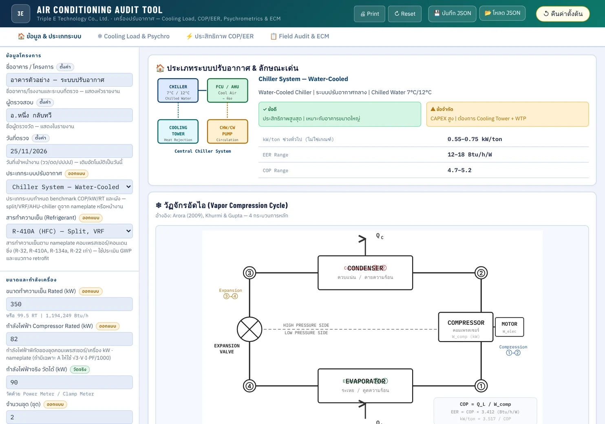
1
2
3
4
5
6
1
พิมพ์ · Reset · บันทึก/โหลด JSON
2
คืนค่าตั้งต้น — ล้างทุกช่องกลับเป็นตัวอย่าง
3
แท็บ 4 แท็บ เรียงตามลำดับงาน
4
แถบซ้าย: ช่องกรอกทั้งหมดอยู่ที่นี่ แบ่ง 6 หมวด
5
การ์ดอธิบายระบบที่เลือก — เปลี่ยนตามประเภทระบบ
6
แผนภาพวัฏจักรทำความเย็น
💡 เคล็ดลับ
เครื่องมือนี้กรอกที่เดียวคือแถบซ้าย — พื้นที่ด้านขวามีแต่ปุ่มคำนวณและผลลัพธ์
เปิดบนมือถือ สลับภาษา และป้ายสีข้างชื่อช่อง
คู่มือใช้งาน · ตรวจประเมินระบบปรับอากาศ (Air Conditioning Audit Tool) · ระดับ Free
4 / 29
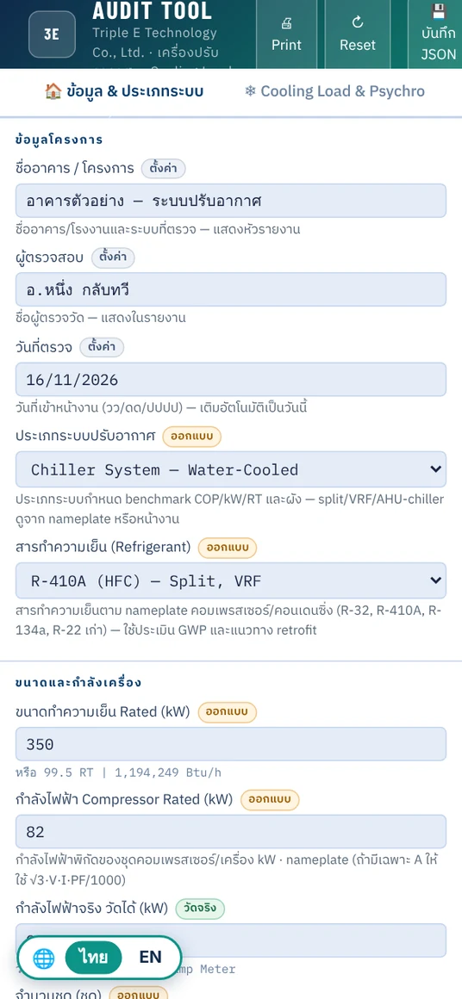
ใช้บนมือถือหน้างานได้ — แถบซ้ายจะย้ายขึ้นไปอยู่ด้านบน ตามด้วยผลลัพธ์
ปุ่ม 🌐 ไทย | EN ลอยอยู่ด้านล่าง กดสลับภาษาได้ ค่าที่กรอกไว้ไม่หาย
ป้าย ออกแบบ = อ่านจากป้ายเครื่อง/แบบ · วัดจริง = ต้องวัดหน้างาน · ตั้งค่า = สมมติฐานที่เลือกเอง
ใต้ทุกช่องมีคำอธิบายสีเทา บอกแหล่งข้อมูลและช่วงค่าปกติ
💡 เคล็ดลับ
จดค่าลงแบบฟอร์ม (สไลด์ 6) ที่หน้างานก่อน แล้วค่อยกรอก จะผิดน้อยกว่า
คำศัพท์ 6 คำที่ต้องรู้ก่อนเริ่ม
คู่มือใช้งาน · ตรวจประเมินระบบปรับอากาศ (Air Conditioning Audit Tool) · ระดับ Free
5 / 29
| คำ | ความหมายแบบสั้น | จำง่าย ๆ |
|---|---|---|
| ตันความเย็น (RT) | หน่วยขนาดทำความเย็น — 1 RT = 3.517 kW = 12,000 BTU/h | 350 kW ≈ 99.5 RT |
| COP | ความเย็นที่ได้ (kW) ÷ ไฟที่ใช้ (kW) | ยิ่งสูงยิ่งดี |
| kW/ตัน (kW/RT) | ไฟที่ใช้ต่อความเย็น 1 ตัน — ช่างเครื่องทำน้ำเย็นใช้ค่านี้ | ยิ่งต่ำยิ่งดี |
| EER | ความเย็น (BTU/h) ÷ ไฟ (W) = COP × 3.412 | ใช้กับแอร์ขนาดเล็ก |
| Sensible / Latent | Sensible = ความร้อนที่ทำให้อุณหภูมิสูง · Latent = ความร้อนจากความชื้น | คน อากาศภายนอก มีทั้งสองอย่าง |
| น้ำเย็นไป-กลับ | น้ำเย็นออกจากเครื่อง ~7 °C ไปรับความร้อนแล้วกลับมา ~12 °C | ส่วนต่าง 5 °C คือค่าออกแบบทั่วไป |
💡 เคล็ดลับ
ตัวเลข "ช่วงทั่วไป" ในเครื่องมือเขียนกำกับว่าไม่ใช่เกณฑ์ — การเทียบเกณฑ์ทำในแท็บประสิทธิภาพ ตามมาตรฐานอ้างอิงที่เลือก
เตรียมข้อมูลก่อนลงหน้างาน (แบบฟอร์มจดค่า)
คู่มือใช้งาน · ตรวจประเมินระบบปรับอากาศ (Air Conditioning Audit Tool) · ระดับ Free
6 / 29
| หมวดในแถบซ้าย | ข้อมูลที่ต้องจด | เครื่องมือวัด / แหล่งข้อมูล | ค่าอาคาร A |
|---|---|---|---|
| ข้อมูลโครงการ | ประเภทระบบ · สารทำความเย็น | ป้ายเครื่อง | เครื่องทำน้ำเย็นระบายด้วยน้ำ |
| ขนาดและกำลัง | ขนาดทำความเย็น · กำลังไฟฟ้าตามป้าย · จำนวนชุด | ป้ายเครื่อง / แคตตาล็อก | 350 kW · 82 kW · 2 ชุด |
| ขนาดและกำลัง | กำลังไฟฟ้าที่วัดได้ · ชั่วโมงใช้งาน · ค่าไฟ | Power meter · บันทึกเดินเครื่อง · บิลค่าไฟ | 90 kW · 3,500 ชม. · 4.50 บาท |
| VFD ปั๊ม/พัดลม | กำลังไฟรวมของปั๊มน้ำเย็นและพัดลมที่จะติด VFD | Power meter / ป้ายมอเตอร์ | 30 kW |
| อุณหภูมิ | ห้อง (°C, %RH) · นอกอาคาร · ลมจ่าย · น้ำเย็นไป/กลับ | เทอร์โม-ไฮโกรมิเตอร์ · เทอร์โมมิเตอร์ท่อ | 24 °C 55 % · 35 · 13 · 7 / 12 °C |
| Cooling Load | พื้นที่ · จำนวนคน · ไฟภายใน · ความร้อนผ่านเปลือกอาคาร · อากาศบริสุทธิ์ | แบบอาคาร · นับจริง · บิล/มิเตอร์ย่อย | 4,000 m² · 300 คน · 140 · 160 kW · 10,800 m³/h |
| มาตรฐาน | มาตรฐานอ้างอิงที่จะเทียบ | เลือกให้ตรงชนิดเครื่อง | BEC พ.ศ. 2564 เครื่องทำน้ำเย็นสกรู |
⚠️ ระวัง
การวัดไฟฟ้าในตู้ควบคุมให้ช่างไฟฟ้าผู้รับผิดชอบเป็นคนทำ — ผู้ฝึกจดค่าและกรอกเครื่องมือ
ขั้นที่ 1
แถบซ้าย: ประเภทระบบ ขนาด และกำลังไฟฟ้า
คู่มือใช้งาน · ตรวจประเมินระบบปรับอากาศ (Air Conditioning Audit Tool) · ระดับ Free
7 / 29
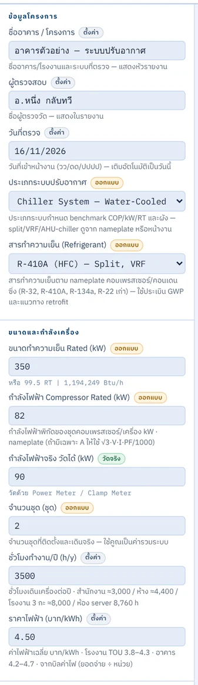
1
2
3
4
5
6
7
8
9
1
ชื่ออาคาร/โครงการ — ขึ้นหัวรายงาน
2
ประเภทระบบ 7 แบบ — เลือกผิด ช่วงค่าทั่วไปผิดทั้งหมด
3
สารทำความเย็นตามป้ายเครื่อง
4
ขนาดทำความเย็นตามป้าย (kW) ต่อ 1 ชุด
5
กำลังไฟฟ้าคอมเพรสเซอร์ตามป้าย (kW)
6
กำลังไฟฟ้าที่วัดได้จริง (kW) — ค่าที่สำคัญที่สุด
7
จำนวนชุดที่เหมือนกัน
8
ชั่วโมงใช้งานต่อปี
9
ค่าไฟฟ้าเฉลี่ย (บาท/kWh)
ป้ายบอกเป็นตันความเย็น: คูณ 3.517 ให้เป็น kW ก่อนกรอก (100 RT = 351.7 kW)
ขั้นที่ 2
แถบซ้าย: ปั๊ม/พัดลม และอุณหภูมิการทำงาน
คู่มือใช้งาน · ตรวจประเมินระบบปรับอากาศ (Air Conditioning Audit Tool) · ระดับ Free
8 / 29
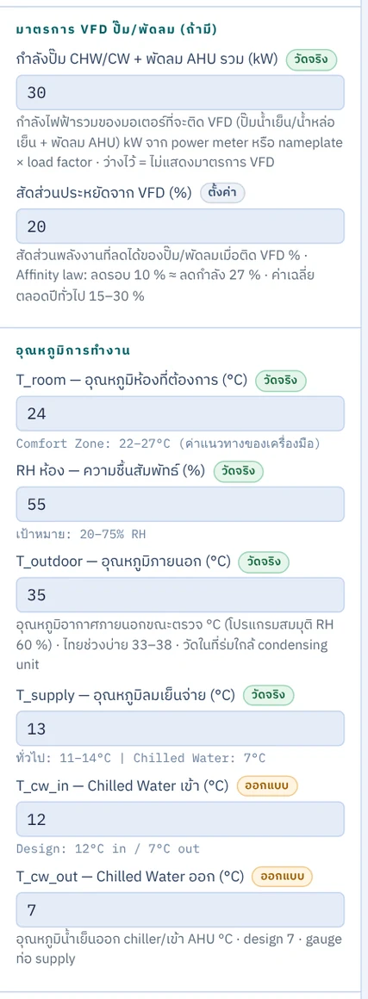
1
2
3
4
5
6
7
8
1
กำลังไฟปั๊ม/พัดลมที่จะติด VFD (kW) — เว้นว่าง = ไม่ประเมินมาตรการ VFD
2
สัดส่วนที่คาดว่าลดได้เมื่อติด VFD (%)
3
อุณหภูมิห้อง (°C)
4
ความชื้นสัมพัทธ์ในห้อง (%)
5
อุณหภูมินอกอาคาร (°C)
6
อุณหภูมิลมจ่าย (°C)
7
อุณหภูมิน้ำเย็นกลับเข้าเครื่อง (°C)
8
อุณหภูมิน้ำเย็นออกจากเครื่อง (°C)
อุณหภูมิห้องและความชื้นใช้คำนวณภาระความเย็นและแผนภูมิไซโครเมตริกในขั้นที่ 5
ขั้นที่ 3
แถบซ้าย: ข้อมูลอาคาร และมาตรฐานอ้างอิง
คู่มือใช้งาน · ตรวจประเมินระบบปรับอากาศ (Air Conditioning Audit Tool) · ระดับ Free
9 / 29
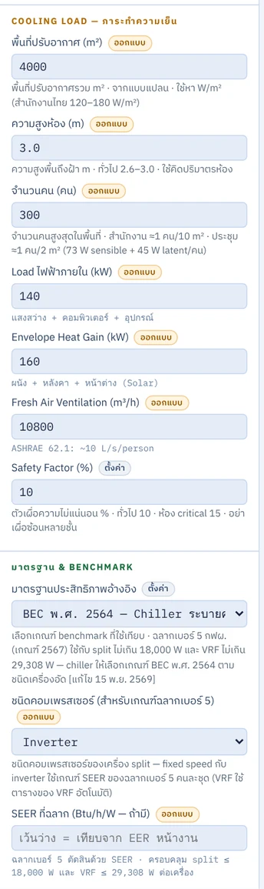
1
2
3
4
5
6
7
8
9
1
พื้นที่ปรับอากาศ (m²)
2
จำนวนคนสูงสุดในพื้นที่
3
ไฟฟ้าที่ใช้ภายใน (kW) — แสงสว่าง + คอมพิวเตอร์ + อุปกรณ์
4
ความร้อนผ่านผนัง หลังคา และกระจก (kW)
5
อากาศบริสุทธิ์ที่เติมเข้าอาคาร (m³/h)
6
ค่าเผื่อ (%)
7
มาตรฐานอ้างอิงที่จะเทียบ — เลือกให้ตรงชนิดเครื่อง
8
ชนิดคอมเพรสเซอร์ (ใช้กับฉลากเบอร์ 5)
9
SEER ที่ฉลาก (ใช้กับแอร์แยกส่วน/VRF)
ไม่รู้ความร้อนผ่านเปลือกอาคาร: เริ่มจาก 30–50 W ต่อพื้นที่ 1 m² แล้วปรับตามปริมาณกระจก
แท็บแรก: การ์ดอธิบายระบบที่เลือก
คู่มือใช้งาน · ตรวจประเมินระบบปรับอากาศ (Air Conditioning Audit Tool) · ระดับ Free
10 / 29
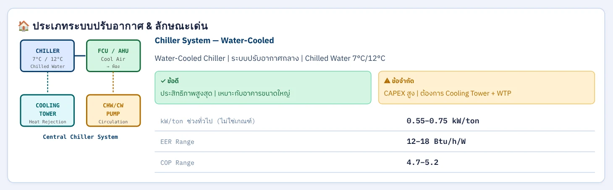
ภาพซ้ายแสดงส่วนประกอบหลักของระบบที่เลือกในแถบซ้าย — เปลี่ยนประเภทระบบ ภาพจะเปลี่ยนตาม
บอกข้อดี ข้อจำกัด และช่วงค่าทั่วไปของ kW/ตัน EER และ COP
อาคาร A: เครื่องทำน้ำเย็นระบายความร้อนด้วยน้ำ — ช่วงทั่วไป 0.55–0.75 kW/ตัน
ใช้การ์ดนี้อธิบายลูกค้าว่าระบบของเขาคืออะไร ก่อนเข้าเรื่องตัวเลข
💡 เคล็ดลับ
ช่วงทั่วไปเป็นข้อมูลประกอบ ไม่ใช่เกณฑ์ผ่าน/ตก — เครื่องมือเขียนกำกับไว้ทุกจุด
แผนภาพวัฏจักรทำความเย็น
คู่มือใช้งาน · ตรวจประเมินระบบปรับอากาศ (Air Conditioning Audit Tool) · ระดับ Free
11 / 29
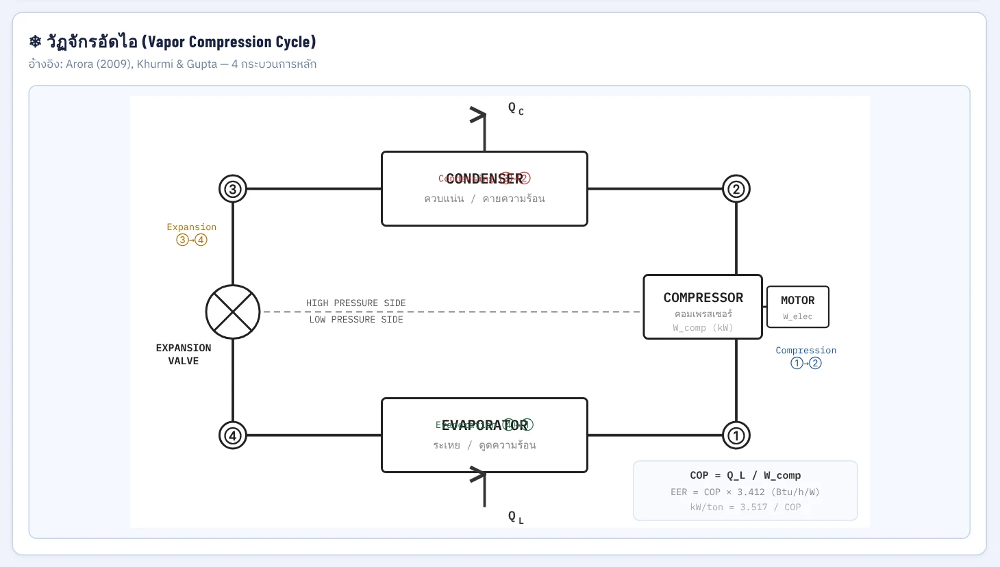
อุปกรณ์ 4 ตัวต่อเป็นวง: คอมเพรสเซอร์ (อัด ใช้ไฟ) → คอนเดนเซอร์ (ทิ้งความร้อน) → วาล์วลดความดัน → อีวาพอเรเตอร์ (ดูดความร้อน = ทำความเย็น)
ไฟฟ้าเข้าที่คอมเพรสเซอร์จุดเดียว — COP คือความเย็นที่อีวาพอเรเตอร์ หารด้วยไฟที่คอมเพรสเซอร์
คอนเดนเซอร์สกปรกหรือน้ำระบายความร้อนร้อน → คอมเพรสเซอร์ต้องอัดสูงขึ้น → กินไฟเพิ่ม
💡 เคล็ดลับ
ใช้ภาพนี้ประกอบตอนอธิบายว่าทำไมการล้างคอนเดนเซอร์จึงประหยัดไฟ
ขั้นที่ 4
คำนวณจากป้ายเครื่อง
คู่มือใช้งาน · ตรวจประเมินระบบปรับอากาศ (Air Conditioning Audit Tool) · ระดับ Free
12 / 29
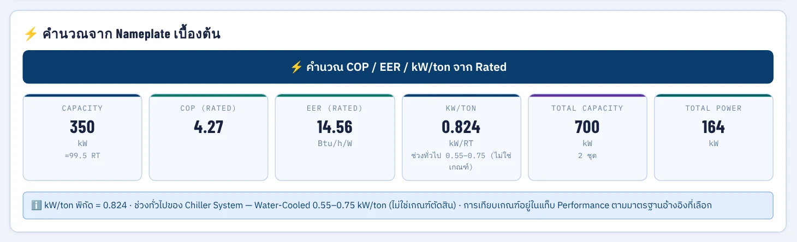
1
2
3
4
5
1
กด คำนวณ COP / EER / kW/ton จาก Rated
2
ขนาด 350 kW = 99.5 ตันความเย็น
3
COP ตามป้าย 4.27 = 350 ÷ 82
4
0.824 kW/ตัน ตามป้าย — เทียบช่วงทั่วไป 0.55–0.75
5
รวมทุกชุด: 700 kW ทำความเย็น · 164 kW ไฟฟ้า
ค่าชุดนี้คือเครื่องตอนใหม่ตามป้าย — ใช้เป็นฐานเทียบกับค่าที่วัดจริงในขั้นที่ 6
EER ตามป้าย 14.56 = COP × 3.412
ขั้นที่ 5
แท็บ Cooling Load: อาคารต้องการความเย็นเท่าไร
คู่มือใช้งาน · ตรวจประเมินระบบปรับอากาศ (Air Conditioning Audit Tool) · ระดับ Free
13 / 29
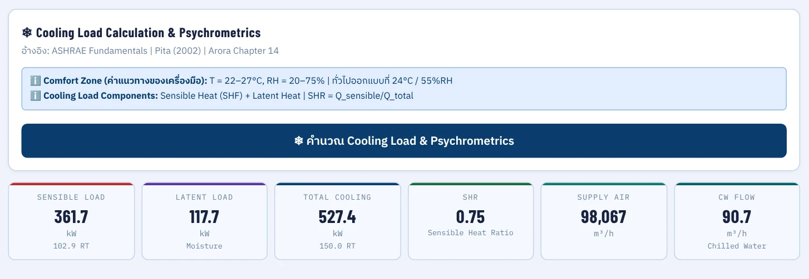
1
2
3
4
5
6
7
1
กด คำนวณ Cooling Load & Psychrometrics
2
ความร้อนสัมผัส 361.7 kW
3
ความร้อนแฝง (ความชื้น) 117.7 kW
4
ภาระรวม 527.4 kW = 150.0 ตัน
5
SHR 0.75 — สัดส่วนความร้อนสัมผัส
6
ลมจ่ายที่ต้องใช้ 98,067 m³/h
7
น้ำเย็นที่ต้องไหล 90.7 m³/h
เทียบกับเครื่องที่ติดตั้ง: ภาระ 150.0 ตัน ต่อกำลังรวม 2 × 99.5 ตัน — เครื่องมือไม่ได้เทียบให้ ต้องดูเอง
ภาระต่ำกว่ากำลังติดตั้งมาก = เครื่องเดินโหลดต่ำ ประสิทธิภาพมักแย่ลง
อ่านตารางที่มาของภาระ และสภาวะอากาศ
คู่มือใช้งาน · ตรวจประเมินระบบปรับอากาศ (Air Conditioning Audit Tool) · ระดับ Free
14 / 29
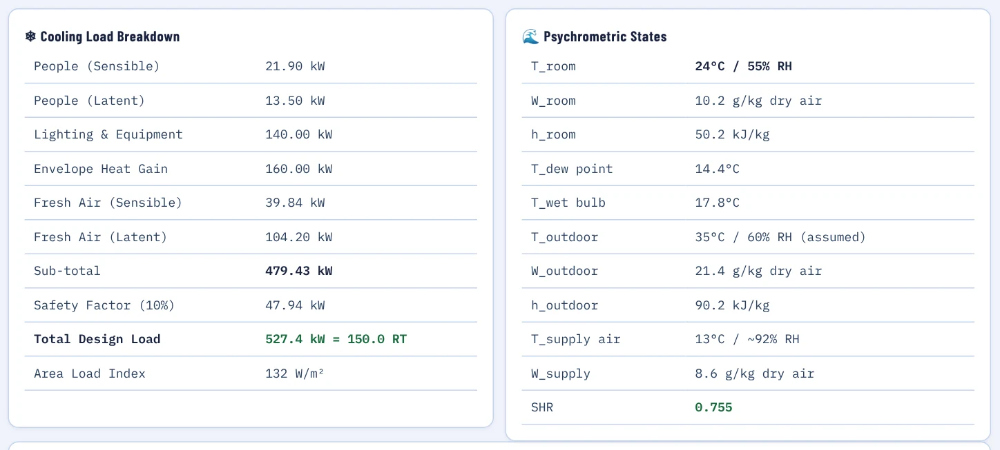
1
2
1
ที่มาของภาระ: คน 21.90 + 13.50 · ไฟภายใน 140.00 · เปลือกอาคาร 160.00 · อากาศบริสุทธิ์ 39.84 + 104.20 kW
2
สภาวะอากาศ: ห้อง 10.2 g/kg · นอกอาคาร 21.4 g/kg · ลมจ่าย 8.6 g/kg
รวมย่อย 479.43 kW + ค่าเผื่อ 47.94 kW = 527.4 kW · ดัชนี 132 W/m² (สำนักงานทั่วไปราว 120–180)
อากาศบริสุทธิ์มีความร้อนแฝงสูง เพราะอากาศนอกอาคารชื้นกว่าในห้องเท่าตัว
จุดน้ำค้างของห้อง 14.4 °C — ผิวท่อหรือหัวจ่ายที่เย็นกว่านี้จะมีหยดน้ำเกาะ
💡 เคล็ดลับ
บรรทัดอุณหภูมินอกอาคารมีคำว่า assumed — ความชื้นนอกอาคารเป็นค่าที่เครื่องมือสมมติ ไม่ได้กรอกเอง
อ่านแผนภูมิไซโครเมตริก
คู่มือใช้งาน · ตรวจประเมินระบบปรับอากาศ (Air Conditioning Audit Tool) · ระดับ Free
15 / 29
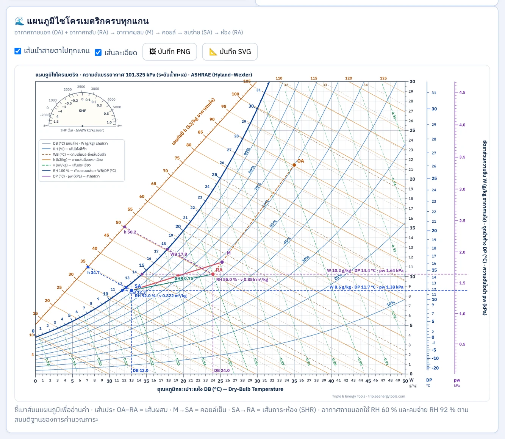
จุดบนแผนภูมิ: OA = อากาศนอกอาคาร · RA = อากาศในห้อง · SA = ลมจ่าย
เส้นจากห้องไปลมจ่าย ชี้ลงซ้าย: ซ้าย = อุณหภูมิลด · ลง = ความชื้นลด
อากาศนอกอาคารอยู่ขวาบนของห้อง = ร้อนกว่าและชื้นกว่า — ยิ่งเติมมาก ภาระยิ่งสูง
ปุ่มใต้หัวการ์ดบันทึกแผนภูมิเป็นรูป PNG หรือ SVG ใส่รายงานได้
💡 เคล็ดลับ
ติ๊กเปิด/ปิดเส้นประกอบได้ ถ้าแผนภูมิดูรกเกินไปตอนนำเสนอ
ลองเปลี่ยนค่า (What-if): อะไรทำให้ภาระความเย็นเปลี่ยน
คู่มือใช้งาน · ตรวจประเมินระบบปรับอากาศ (Air Conditioning Audit Tool) · ระดับ Free
16 / 29
| กรณี | ภาระรวม (kW) | ตันความเย็น | W/m² | อากาศบริสุทธิ์ (kW) |
|---|---|---|---|---|
| อาคาร A: ห้อง 24 °C · อากาศบริสุทธิ์ 10,800 m³/h | 527.4 | 150.0 | 132 | 39.84 + 104.20 |
| ตั้งอุณหภูมิห้องเป็น 26 °C | 505.9 | 143.8 | 126 | 32.59 + 91.93 |
| ลดอากาศบริสุทธิ์เหลือ 7,200 m³/h | 474.6 | 134.9 | 119 | 26.56 + 69.46 |
ทำเอง: แก้ค่าในแถบซ้าย → กด คำนวณ Cooling Load → จดผล → แก้กลับเป็นค่าเดิม
อากาศบริสุทธิ์เป็นภาระก้อนใหญ่ — แต่ห้ามลดต่ำกว่าที่มาตรฐานระบายอากาศกำหนด ให้ควบคุมตามจำนวนคนจริงแทน
ส่วนที่เครื่องมือคิดจากอุณหภูมิห้องคืออากาศบริสุทธิ์ — ความร้อนผ่านเปลือกอาคารเป็นค่าที่กรอกเอง ไม่เปลี่ยนตาม
ขั้นที่ 6
แท็บประสิทธิภาพ: เครื่องวันนี้เป็นอย่างไร
คู่มือใช้งาน · ตรวจประเมินระบบปรับอากาศ (Air Conditioning Audit Tool) · ระดับ Free
17 / 29
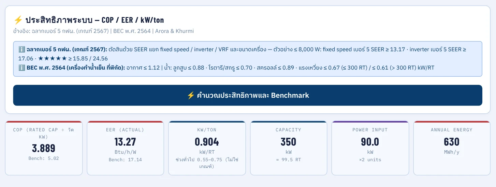
1
2
3
4
5
6
1
แถบข้อมูลเกณฑ์ของมาตรฐานที่เลือกในแถบซ้าย
2
กด คำนวณประสิทธิภาพและ Benchmark
3
COP 3.889 = ขนาดตามป้าย 350 ÷ ไฟที่วัดได้ 90 · ค่าอ้างอิง 5.02
4
EER 13.27 · ค่าอ้างอิง 17.14
5
0.904 kW/ตัน — ช่วงทั่วไป 0.55–0.75
6
ใช้ไฟ 630 MWh/ปี (รวม 2 ชุด)
COP นี้คิดจากขนาดตามป้าย — ถือว่าเครื่องยังทำความเย็นได้เต็มพิกัด ถ้าเครื่องทำได้ไม่ถึง COP จริงจะต่ำกว่านี้อีก
ต้องการ COP จริง ต้องวัดอัตราไหลและอุณหภูมิน้ำเย็นไป-กลับ แล้วคำนวณความเย็นที่ทำได้จริง
ตารางรายละเอียด และการเทียบเกณฑ์
คู่มือใช้งาน · ตรวจประเมินระบบปรับอากาศ (Air Conditioning Audit Tool) · ระดับ Free
18 / 29
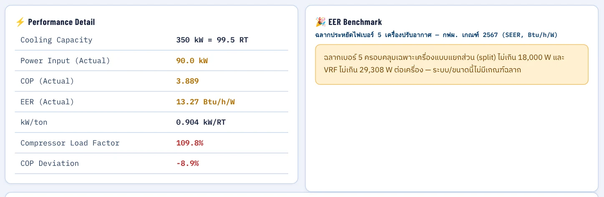
1
2
1
ไฟที่วัด ÷ ไฟตามป้าย = 109.8 % · COP ต่างจากป้าย -8.9 %
2
กล่องเกณฑ์ฉลากเบอร์ 5 — เครื่องทำน้ำเย็นไม่อยู่ในขอบเขตฉลาก จึงขึ้นว่าไม่มีเกณฑ์ฉลาก
กินไฟมากกว่าป้าย 109.8 % โดยขนาดเท่าเดิม → ให้ตรวจคอนเดนเซอร์ น้ำระบายความร้อน และปริมาณสารทำความเย็น
ค่าอ้างอิงของอาคาร A มาจากมาตรฐานที่เลือกในแถบซ้าย (BEC พ.ศ. 2564 เครื่องทำน้ำเย็นระบายด้วยน้ำ แบบสกรู)
ฉลากเบอร์ 5 ใช้กับแอร์แยกส่วนและ VRF ขนาดเล็กเท่านั้น — เลือกมาตรฐานอ้างอิงให้ตรงชนิดเครื่อง
อ่านกราฟเทียบ และค่าไฟต่อปี
คู่มือใช้งาน · ตรวจประเมินระบบปรับอากาศ (Air Conditioning Audit Tool) · ระดับ Free
19 / 29
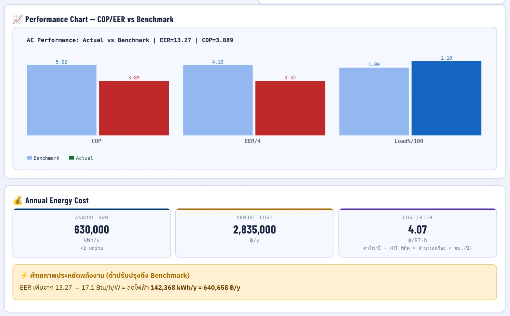
1
2
3
1
กราฟแท่ง 3 คู่: COP · EER ÷ 4 (ย่อให้อยู่สเกลเดียวกัน) · ไฟที่วัด ÷ ไฟตามป้าย — สีฟ้าอ่อน = ค่าอ้างอิง · แท่งข้าง ๆ = ค่าจริง
2
ค่าไฟ 2,835,000 บาท/ปี (630,000 kWh · 2 ชุด)
3
ถ้าปรับปรุงถึงค่าอ้างอิง: ลด 142,368 kWh = 640,658 บาท/ปี
COP และ EER: แท่งค่าจริงเตี้ยกว่าค่าอ้างอิง = แย่กว่า (สีแดง) · คู่ที่สาม: สูงกว่า 1.00 = กินไฟเกินป้าย
ต้นทุนต่อตันความเย็นต่อชั่วโมง 4.07 บาท — ใช้เทียบระหว่างอาคารหรือระหว่างเครื่อง
⚠️ ระวัง
ผลประหยัดถึงค่าอ้างอิงเป็นศักยภาพสูงสุด (เทียบเท่าเปลี่ยนเครื่องใหม่) ไม่ใช่ผลจากการบำรุงรักษาอย่างเดียว
ลองเปลี่ยนค่า (What-if): ไฟที่วัดได้ และชั่วโมงใช้งาน
คู่มือใช้งาน · ตรวจประเมินระบบปรับอากาศ (Air Conditioning Audit Tool) · ระดับ Free
20 / 29
| กรณี | COP | kW/ตัน | ค่าไฟ (บาท/ปี) | ศักยภาพประหยัด (บาท/ปี) |
|---|---|---|---|---|
| อาคาร A: วัดได้ 90 kW · 3,500 ชม. | 3.889 | 0.904 | 2,835,000 | 640,658 |
| หลังล้างคอนเดนเซอร์ วัดได้ 82 kW (เท่าป้าย) | 4.268 | 0.824 | 2,583,000 | 388,658 |
| ปล่อยไว้ วัดได้ 100 kW | 3.500 | 1.005 | 3,150,000 | 955,658 |
| เดินเครื่อง 5,000 ชม./ปี | 3.889 | 0.904 | 4,050,000 | 915,226 |
ทำเอง: แก้ค่าในแถบซ้าย → กด คำนวณประสิทธิภาพ → จดผล → แก้กลับเป็นค่าเดิม
ไฟที่วัดได้ต่างกัน 8 kW ต่อชุด ค่าไฟต่างกันปีละหลายแสนบาท — วัดให้แม่น และวัดซ้ำหลังบำรุงรักษา
ชั่วโมงใช้งานไม่เปลี่ยน COP แต่เปลี่ยนเงิน — ใช้ชั่วโมงจากบันทึกเดินเครื่องจริง ไม่ใช่ประมาณ
ขั้นที่ 7
แท็บ Field Audit: รายการตรวจหน้างาน
คู่มือใช้งาน · ตรวจประเมินระบบปรับอากาศ (Air Conditioning Audit Tool) · ระดับ Free
21 / 29
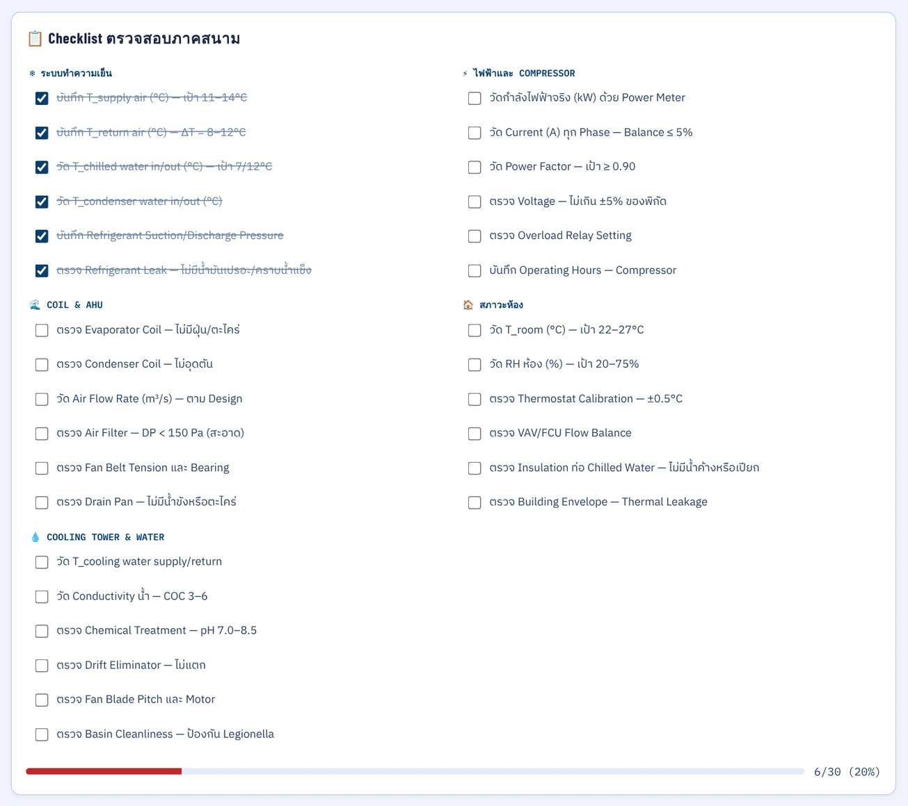
รายการตรวจ 30 ข้อ แบ่ง 5 หมวด: ระบบทำความเย็น · ไฟฟ้าและคอมเพรสเซอร์ · คอยล์และ AHU · สภาวะห้อง · หอระบายความร้อนและน้ำ
คลิกที่ข้อเพื่อติ๊กว่าตรวจแล้ว — แถบล่างสุดแสดงความคืบหน้า
หลายข้อมีค่าที่ควรได้กำกับ เช่น ช่วงอุณหภูมิลมจ่าย ส่วนต่างอุณหภูมิน้ำเย็น ความสมดุลของกระแส
ใช้บนมือถือขณะเดินตรวจ แล้วพิมพ์แนบรายงาน
💡 เคล็ดลับ
ข้อที่ตรวจไม่ได้ให้เว้นไว้และจดเหตุผล — ดีกว่าติ๊กโดยไม่ได้ตรวจ
ตารางบันทึกค่าที่วัดได้
คู่มือใช้งาน · ตรวจประเมินระบบปรับอากาศ (Air Conditioning Audit Tool) · ระดับ Free
22 / 29
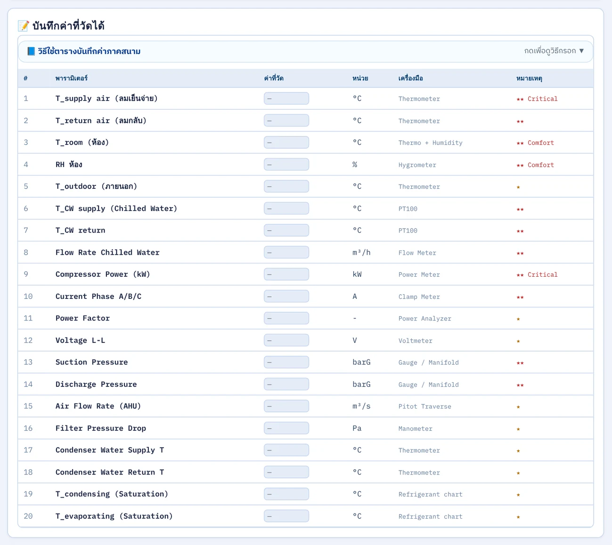
1
2
3
1
กดแถบนี้เพื่อเปิดวิธีใช้ตาราง
2
แต่ละแถว: ค่าที่ต้องวัด · ช่องจดค่า · หน่วย · เครื่องมือที่ใช้วัด
3
แถวที่มีป้าย Critical คือค่าที่ต้องมี จึงจะคำนวณประสิทธิภาพได้
ตารางนี้เป็นแบบฟอร์มจดค่า 20 รายการ — ค่าที่จดไม่ได้ถูกส่งไปคำนวณอัตโนมัติ ต้องนำไปกรอกในแถบซ้ายเอง
จดค่าตอนเครื่องเดินนิ่งแล้ว และจดเวลาที่วัดไว้ด้วย
💡 เคล็ดลับ
ค่าที่วัดไม่ได้ให้เว้นว่างและเขียนเหตุผล — ไม่ต้องเดา
ECM Recommendations: มาตรการที่ควรพิจารณา
คู่มือใช้งาน · ตรวจประเมินระบบปรับอากาศ (Air Conditioning Audit Tool) · ระดับ Free
23 / 29
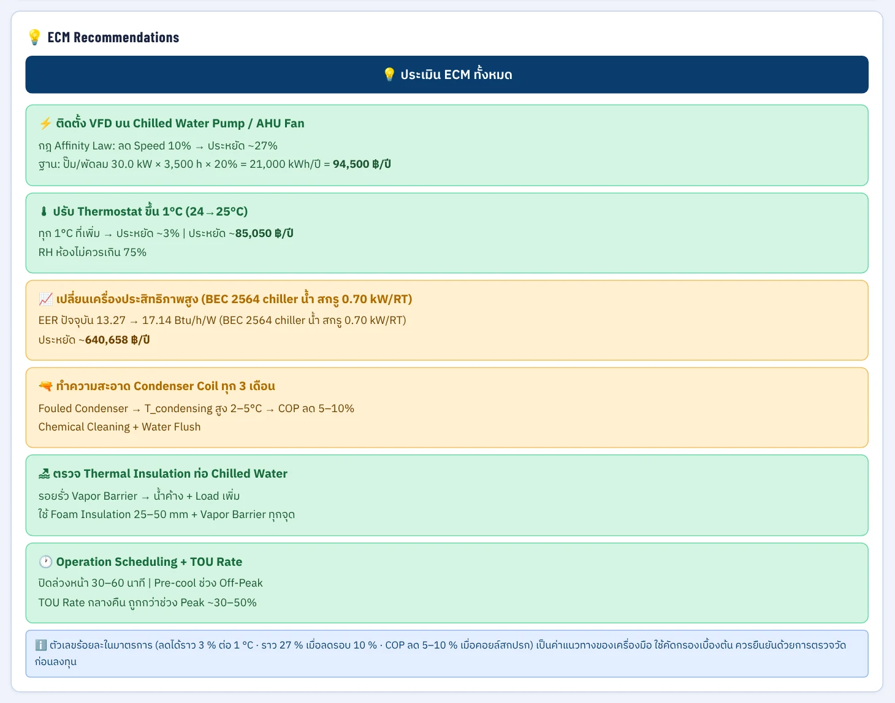
1
1
กด ประเมิน ECM ทั้งหมด
ติด VFD ที่ปั๊ม/พัดลม: 30 kW × 3,500 ชม. × 20 % = 21,000 kWh = 94,500 บาท/ปี
ปรับอุณหภูมิห้องขึ้น 1 °C: ประมาณ 85,050 บาท/ปี — ไม่ต้องลงทุน
เปลี่ยนเครื่องประสิทธิภาพสูง: ประมาณ 640,658 บาท/ปี — ต้องลงทุนสูง ใช้ประกอบแผนเปลี่ยนเครื่องตามอายุ
มาตรการที่ไม่มีตัวเลข (ล้างคอนเดนเซอร์ · ฉนวนท่อ · ตารางเดินเครื่อง) เป็นงานบำรุงรักษาที่ควรทำอยู่แล้ว
⚠️ ระวัง
ร้อยละในมาตรการเป็นค่าประมาณทั่วไป (เครื่องมือเขียนหมายเหตุไว้ท้ายการ์ด) — ก่อนเสนอลูกค้าให้ยืนยันด้วยการวัดจริง
สร้างสรุปรายงาน
คู่มือใช้งาน · ตรวจประเมินระบบปรับอากาศ (Air Conditioning Audit Tool) · ระดับ Free
24 / 29
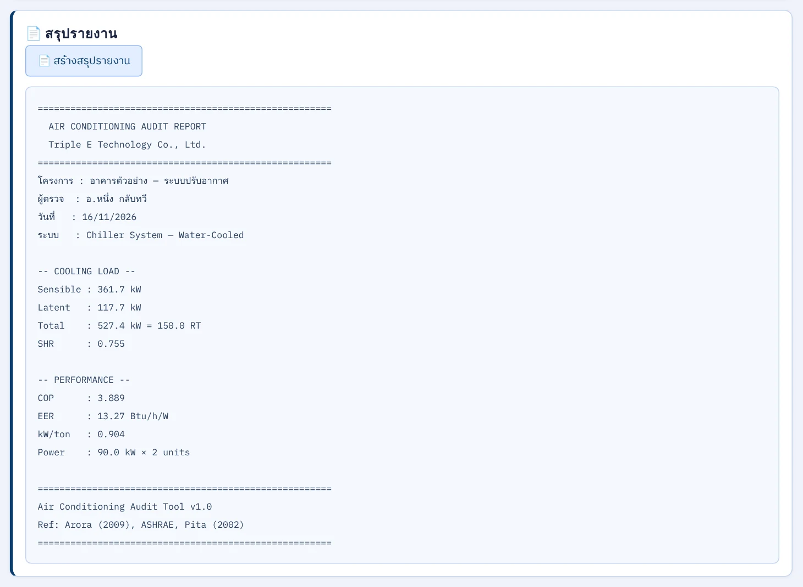
1
2
1
กด สร้างสรุปรายงาน
2
ข้อความสรุป: โครงการ · ผู้ตรวจ · วันที่ · ระบบ · ภาระความเย็น · ประสิทธิภาพ
ลากคลุมข้อความแล้วคัดลอกไปวางในรายงานหรืออีเมลได้ทันที
กดคำนวณทุกแท็บก่อนสร้างรายงาน — ส่วนที่ยังไม่ได้คำนวณจะไม่มีตัวเลข
ต้องการรูปกราฟและตาราง ใช้ปุ่ม Print ด้านบนแล้วบันทึกเป็น PDF
บันทึกงาน และเปิดงานเดิม
คู่มือใช้งาน · ตรวจประเมินระบบปรับอากาศ (Air Conditioning Audit Tool) · ระดับ Free
25 / 29
1
2
3
4
5
1
Print — พิมพ์หน้าปัจจุบันเป็นกระดาษหรือ PDF
2
Reset — ซ่อนผลลัพธ์ทั้งหมดเพื่อเริ่มคำนวณใหม่ (ค่าที่กรอกยังอยู่)
3
บันทึก JSON — เก็บค่าที่กรอกทั้งหมดเป็นไฟล์ 1 ไฟล์
4
โหลด JSON — เปิดไฟล์งานเดิมกลับมาทำต่อ
5
คืนค่าตั้งต้น — ล้างทุกช่องกลับเป็นตัวอย่าง (บันทึก JSON ก่อนกด)
ระบบ 1 ชุด = ไฟล์ JSON 1 ไฟล์ — ตั้งชื่อตามอาคารและวันที่ เช่น อาคารA_Chiller_2569-11-16.json
เครื่องมือทำงานในเบราว์เซอร์ของคุณ — ปิดหน้าเว็บโดยไม่บันทึก ค่าที่กรอกอาจหาย
ข้อผิดพลาดที่พบบ่อย
คู่มือใช้งาน · ตรวจประเมินระบบปรับอากาศ (Air Conditioning Audit Tool) · ระดับ Free
26 / 29
✗ กรอกขนาดเป็นตันความเย็น
✓ ช่องขนาดหน่วย kW — คูณ 3.517 ก่อน (100 RT = 351.7 kW)
✗ ใช้ kW ป้ายแทน kW ที่วัด
✓ ช่อง "กำลังไฟฟ้าที่วัดได้" ต้องมาจาก power meter ขณะเดินโหลดปกติ
✗ รวมปั๊มกับพัดลมเข้าไปด้วย
✓ ช่องกำลังไฟฟ้าเป็นของคอมเพรสเซอร์ — ปั๊ม/พัดลมกรอกแยกในหมวด VFD
✗ เลือกมาตรฐานไม่ตรงชนิดเครื่อง
✓ เครื่องทำน้ำเย็นใช้ BEC · แอร์แยกส่วน/VRF ใช้ฉลากเบอร์ 5
✗ ลืมจำนวนชุด
✓ ค่าไฟต่อปีคูณด้วยจำนวนชุด — เครื่องสำรองที่ไม่เดินไม่ต้องนับ
✗ เข้าใจว่า COP คือค่าจริง
✓ COP ในแท็บ 3 คิดจากขนาดตามป้าย — เครื่องเสื่อม COP จริงต่ำกว่านี้
✗ แก้ค่าแล้วไม่กดคำนวณ
✓ กดปุ่มคำนวณของแท็บนั้นทุกครั้งก่อนจดผล
✗ จดค่าในตารางแล้วไม่กรอกแถบซ้าย
✓ ตารางบันทึกค่าเป็นแบบฟอร์มเท่านั้น ไม่ส่งค่าไปคำนวณ
แบบฝึกหัด: อาคาร B เครื่องทำน้ำเย็น 530 kW 1 ชุด
คู่มือใช้งาน · ตรวจประเมินระบบปรับอากาศ (Air Conditioning Audit Tool) · ระดับ Free
27 / 29
| ข้อมูล | ค่า |
|---|---|
| ขนาดทำความเย็นตามป้าย | 530 kW |
| กำลังไฟฟ้าคอมเพรสเซอร์ตามป้าย | 105 kW |
| กำลังไฟฟ้าที่วัดได้ | 122 kW |
| จำนวนชุด · ชั่วโมงใช้งาน | 1 ชุด · 4,000 ชม./ปี |
| ค่าอื่นทั้งหมด | ใช้ค่าตั้งต้นของเครื่องมือ |
คำถาม — กรอกแล้วตอบ
1
ตามป้าย: COP = ______ · ______ kW/ตัน
2
วัดจริง: COP = ______ · ______ kW/ตัน
3
กินไฟเป็นกี่ % ของป้าย? COP ต่างจากป้ายกี่ %?
4
ค่าไฟปีละ ______ บาท
💡 เคล็ดลับ
กด "คืนค่าตั้งต้น" ก่อนเริ่ม → แก้ 5 ช่องในแถบซ้าย → แท็บแรกกดคำนวณ → แท็บประสิทธิภาพกดคำนวณ
เฉลยแบบฝึกหัด อาคาร B
คู่มือใช้งาน · ตรวจประเมินระบบปรับอากาศ (Air Conditioning Audit Tool) · ระดับ Free
28 / 29
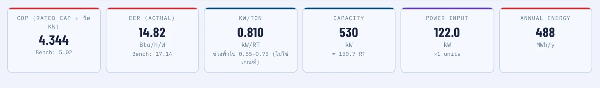
1) ตามป้าย: COP = 530 ÷ 105 = 5.05 · 0.697 kW/ตัน (150.7 ตันความเย็น)
2) วัดจริง: COP = 530 ÷ 122 = 4.344 · 0.810 kW/ตัน
3) กินไฟ 116.2 % ของป้าย · COP ต่างจากป้าย -13.9 %
4) ค่าไฟ 2,196,000 บาท/ปี (488,000 kWh) · ศักยภาพถึงค่าอ้างอิง 297,223 บาท/ปี
✓ ผ่าน
ได้ตัวเลขตรงกัน = ใช้เครื่องมือเป็นแล้ว · เครื่องนี้ตามป้ายดี แต่วันนี้กินไฟเกิน — เริ่มที่ตรวจคอนเดนเซอร์และน้ำระบายความร้อน
สรุป 1 หน้า (พิมพ์ติดไว้ข้างคอมพิวเตอร์)
คู่มือใช้งาน · ตรวจประเมินระบบปรับอากาศ (Air Conditioning Audit Tool) · ระดับ Free
29 / 29
1
แถบซ้าย: ระบบและเครื่อง
ประเภท · ขนาด (kW) · ไฟตามป้าย · ไฟที่วัด · จำนวนชุด
2
แถบซ้าย: อุณหภูมิ
ห้อง · นอกอาคาร · ลมจ่าย · น้ำเย็นไป/กลับ
3
แถบซ้าย: อาคาร
พื้นที่ · คน · ไฟภายใน · เปลือกอาคาร · อากาศบริสุทธิ์
4
แท็บแรก
กดคำนวณ → COP และ kW/ตัน ตามป้าย
5
Cooling Load
กดคำนวณ → ภาระรวม · W/m² · แผนภูมิ
6
ประสิทธิภาพ
กดคำนวณ → COP จริง · ค่าไฟ · ศักยภาพประหยัด
7
Field Audit & ECM
รายการตรวจ · ตารางจดค่า · มาตรการ
8
รายงาน + บันทึก
สร้างสรุปรายงาน · บันทึก JSON
อ่านผลแล้วตรวจ
☐
kW/ตัน สูงกว่าช่วงทั่วไป → ตรวจคอนเดนเซอร์
☐
กินไฟเกินป้าย → วัดซ้ำหลังบำรุงรักษา
☐
ภาระต่ำกว่ากำลังติดตั้งมาก → ทบทวนจำนวนเครื่องที่เดิน
☐
W/m² หลุดช่วง → ทวนค่าที่กรอก
อ.หนึ่ง กลับทวี / Aj. Nueng Klubtavee
tripleeenergytools.com
tripleeenergytools.com